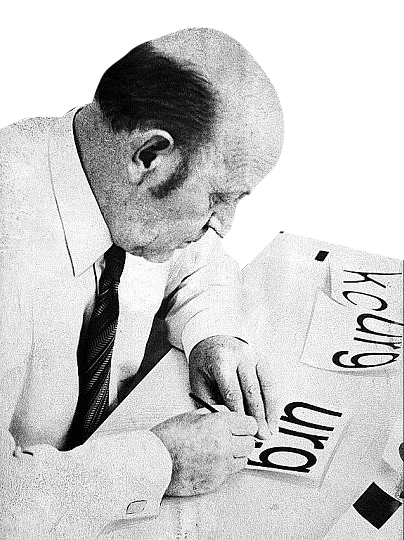

Helvetica
Helvetica is a widely used sans-serif typeface developed in 1957 by Swiss typeface designer 
with input from . It is a neo-grotesque or realist design, one influenced
by the famous 19th century typeface and other German and Swiss designs. Its use
became a hallmark of the International Typographic Style that emerged from the work of Swiss designers
in the 1950s and 60s, becoming one of the  of the 20th century. Over the years,
of the 20th century. Over the years,
a wide range of variants have been released in different weights, widths and sizes, as well as matching
designs for a range of non-Latin alphabets. Notable as originally designed include
the termination of all strokes on exactly horizontal or vertical lines and unusually tight letter
spacing, which give it a dense, compact appearance.